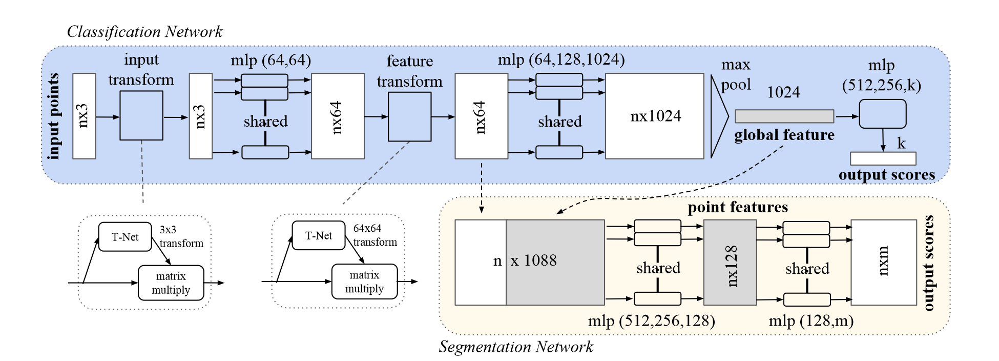

论文：PointNet: Deep Learning on Point Sets for 3D Classification and Segmentation
一、摘要
点云是一类重要的几何数据结构。由于其形式不规则，大多数研究人员将其转换为规则的 3D 体素网格或图像集合来处理。然而这会使数据不必要地庞大。该论文设计了一种直接作用于点云数据的新型神经网络 PointNet，它很好地遵从了输入点的排列不变性，并为从对象分类、部分分割到场景语义解析等应用场景提供统一的架构。PointNet 虽然简单，但展现出了很好的效果。
二、相关工作
3D 深度学习方面，在此论文之前有很多形式出现：
- Volumetric CNNs：最早将 3D 卷积神经网络应用于体素化点云，但由于数据稀疏性和 3D 卷积的计算成本，受到分辨率的限制；
- Multiview CNNs：多视图 CNN 将 3D 点云或形状渲染成 2D 图像，然后应用 2D CNN 对其进行分类。然而将这种方法扩展到场景理解过其它 3D 任务并非易事；
- Spectral CNNs：这种卷积网络在网格点云的频率域上进行，但仅适用于具有规则结构的网格，难以应用于更加复杂和不规则的形状；
- Feature-based DNNs：通过提取传统形状特征将 3D 数据转换为向量，再利用全连接网络对形状分类，但受到特征本身表达能力的限制；
这些方法都不能够直接处理无序点集，而是在尝试将点云转换为序列形式，以便用熟悉的卷积网络来操作，但同时面临计算复杂度等问题。
三、问题陈述
定义点云为一组 3D 点 $\{ P_i|i=1,\dots,n \}$ ，其中 $P_i$ 是包含 $(x,y,z)$ 和额外特征通道（如颜色、法线等）的向量，在论文中仅适用 $(x,y,z)$ 坐标。对于分类问题，输入点云可能是单体，也可能是从场景中预先分割得到。PointNet++ 为 $k$ 个候选类别输出 $k$ 个分数；对于分割问题，任务可能是从单体中分割出不同的结构，也可能是从三维场景中分割出不同的物体。若共有 $n$ 个点，$m$ 个类，则输出 $n\times m$ 个分数，表示每个点属于每个类的概率，从而进行分割。
四、具体方法
$\mathbb{R} ^n$ 空间中点集的性质
我们的输入是来自欧几里德空间的点的子集。它具有三个主要属性：
- 无序性。与图像中的像素阵列或体积网格中的体素阵列不同，点云是一组没有特定顺序的点。换句话说，一个使用 N 个 3D 点集的网络需要对 N ! 种输入点排列具有不变性；
- 点之间的关联性。这些点来自具有距离度量的空间。这意味着点不是孤立的，相邻的点形成一个有意义的子集。因此，该模型需要能够从附近的点捕获局部结构，以及局部结构之间的组合相互作用；
- 变换下的不变性。作为一个几何对象，点集的学习表示应该对某些变换是不变的，如旋转和平移。
PointNet 架构
网络具有三个关键模块：作为对称函数的最大池化层，用于聚合来自所有点的信息、局部和全局信息组合结构，以及两个对齐输入点和点特征的联合对齐网络。下面的单独段落中将讨论这些设计选择背后的原因。
无序输入的对称函数
为了解决无序性问题，论文给出了三种策略：
- 引入一种规范的排序方式，但稳定的排序方式难以确定，且易受噪声的影响；
- 把点云看作一个序列信号，并通过随机排列的方式训练 RNN 以驱使输出结果相同，但这种方法随着点云数量增长失去可行性；
- 利用对称函数聚合来自每个点的信息。所谓聚合信息，即将 $n$ 个向量作为输入而产生一个对输入顺序不变的新向量。例如 $1+2+3 = 2+3 +1$ 。显然这种方法是较为合适的。
定义函数 $h:\mathbb{R} ^N \rightarrow \mathbb{R} ^K$ ，用于对每个点进行处理；定义对称函数 $g:\underbrace{\mathbb{R} ^K\times\cdots\times\mathbb{R} ^K}_{n}\rightarrow\mathbb{R} $ ，聚合处理结果；则由输入到输出的一般函数 $f:2^{\mathbb{R} ^N}\rightarrow\mathbb{R} $ 定义为：
在实践中，论文采用多层感知器（MLP）来近似 $h$，利用最大池化函数来近似 $g$ 函数。
本地和全局信息聚合

对于分割任务，需要结合本地信息和局部信息。论文采用了简单高效的办法：将学习得到的全局特征和局部特征直接连接在一起，如上图所示。然后再重新提取每个点的特征，从而使得每个点的特征同时包含局部和全局信息。再利用新的组合特征训练几个 MLP ，即可实现每个点的类别判断，也就是分割；若要对单体点云进行识别分类，则直接利用全局特征训练。
联合对齐网络
为了使特征具有旋转平移不变性，论文引入了一种迷你网络 T-net 来直接预测仿射变换矩阵，并将该变换直接应用于原始输入。同样地，特征也需要引入旋转不变性，因此对点特征也可以训练一个对齐网络。
关于 T-net 的结构，其相当于小型的 PointNet，利用最大池化得到全局特征，再利用 MLP 得到 $3\times 3$ 的转换矩阵。由于特征空间维数较大，增大了优化的难度，因此在 softmax 训练损失的基础上，添加了一个正则化项，用来将特征变换矩阵约束为近似正交矩阵：
其中 $A$ 是由迷你网络预测得到的旋转矩阵。正则项使得优化更稳定，性能更优。
五、总结
为了直接针对点集进行处理，pointnet 的主要思想就是通过池化来解决无序性，通过 MLP 来扩大和缩放特征尺寸。同时为了引入旋转不变性，将点云坐标（或特征）对齐，使用了 T-net 来预测旋转矩阵。